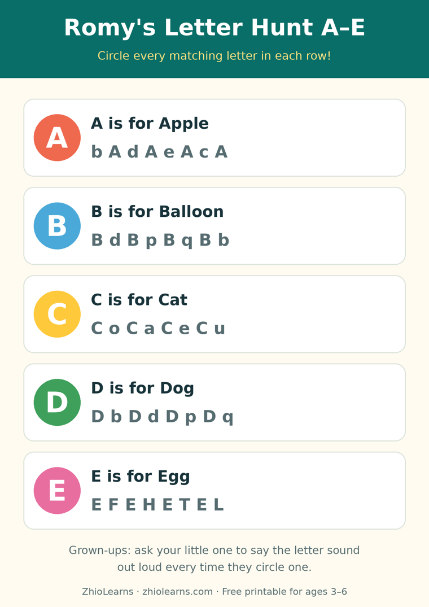

Put the Flashcards Away: Let Your Child Hunt for Letters Instead
Here is a scene most parents of four-year-olds know by heart. You sit down with the flashcards, full of good intentions. Card one: held up bravely. Card two: your child is looking at the ceiling. Card three: your child is under the table, and the letter B has been forgotten by everyone involved.
It is tempting to read that as a focus problem. It usually isn't one. Sitting still while an adult shows you symbols is genuinely hard work for a four-year-old — and, quietly, it isn't even the best way letters get learned. The children who arrive at kindergarten recognising letters with confidence are very often not the drilled ones. They are the ones who kept finding letters out in the wild.
A letter a child finds is a letter they keep
Teachers have a name for the letters that surround a child all day — on shop signs, cereal boxes, book spines, bus stops, the fridge door. They call it environmental print, and young children are naturally drawn to it, because it belongs to their real life instead of to a lesson.
Finding does something showing cannot. When your child spots a letter themselves, three things happen at once: they chose where to look, they recognised the shape in a new place (which is the actual skill reading requires), and they got the small electric pleasure of I found it! — the feeling that makes a child want to do it again tomorrow. Repetition that a child asks for beats repetition an adult schedules, every single time.
The game: one letter, all day, everywhere
The whole game fits in one sentence: pick one letter in the morning, and hunt for it together all day.
- Choose together at breakfast. One letter only. M is a lovely first hunt — it's on the milk carton before you've even left the kitchen.
- Every sighting counts the same way: point, name it, say its sound. "M! M says mmm — like milk." Ten seconds, then life continues.
- Keep a silly tally. Strokes on a sticky note on the fridge. Five is a triumph. Eight means the letter officially lives in your house now.
- Stop while it's still a game. The hunt ends when interest does. Tomorrow there is a new letter, and the day after that, they start hunting without being asked — usually in the middle of your grocery shop, at full volume.
That is the entire curriculum. No sitting still required — in fact, moving helps. A walk around the block is a letter mine: house numbers, street signs, licence plates, the big letter on the bakery window.
When they find the "wrong" letter
They will point at a W, triumphant, during an M hunt. This is not a mistake to correct so much as information: W and M are the same shape flipped, and noticing that is real progress. The response that keeps the game alive is short and warm:
Say: "Good eye — that one is M's upside-down cousin! That's a W. Our M stands on two feet, like this."
Skip: quizzing, re-testing later "to check," or hunting two letters at once to speed things up. One letter, deeply found, is worth five letters briefly shown.
A week of hunts — five or six letters, one a day — and something shifts. Your child starts announcing letters you never hunted, because hunting taught them how to look. That looking is the skill. The alphabet is just where it happens first.
The book that hunts with you
Romy's Alphabet Adventure: Let's Explore the World of Letters was built on exactly this idea. Romy sets off on a treasure hunt, and letters turn up in all the places a curious child would actually look — every page gives you and your little one something to spot, name, and talk about together. It is made for ages 4–6, and especially for the explorers who will not sit still for "lessons" but will happily, joyfully, go on an adventure.
Read a few pages in the morning, pick the day's letter from the hunt, and let the book walk out of its pages and into your kitchen, your street, your shop. And when your little hunter wants the hunt on paper too, the free printable below is ready on the printer.
🖨️ Free printable: Romy's Letter Hunt A–E

Circle the matching letters for A, B, C, D and E, hunt the big letter grid, then draw something that starts with A. Two pages, ages 3–6, free, no sign-up needed to print it.
Download the free printable (PDF)📚 Today's book
Find Romy's Alphabet Adventure: Let's Explore the World of Letters and Romy's other books in our little shop — and read Romy's Alphabet Picnic free in the Storytime section.
See Romy's books →🌙 More from the Parent Corner
Bedtime more of a battle than letter time? Our previous article is about the other end of the day: a short, finished story and the same order every night.
One Short Story, Then Lights Out →